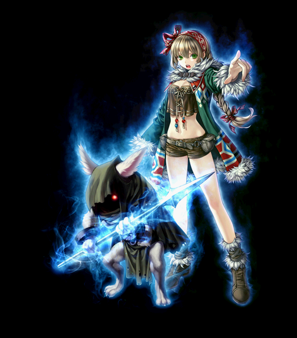

2020/04～ ビーストテイマー 覚醒スキル一覧
2020/02/19 状態異常に伴うスキル改変およびビーストテイマーバランスパッチ後のデータ。
慈愛の民
信望の民
真心の民
[通常スキル]
慈愛の民
| 慈愛の民 | |||||||
|---|---|---|---|---|---|---|---|
| [専用パッシブ] 気の置けない友達 | |||||||
| スキル説明 |
ペット攻撃時に、追加ダメージを与えるようになる。 |
||||||
| スキル効果 |
ペット攻撃時、10%の追加ダメージを与える。 |
||||||
| [専用覚醒スキル] エール | ||||||||
|---|---|---|---|---|---|---|---|---|
| スキル難易度 | 2 | |||||||
| 必要スキル | 励ます[50] |
|||||||
| スキル説明 |
手なずけたペットと召喚獣を励まして攻撃力と防御力を上昇させる。 攻撃時に艇の致命打抵抗が減少し、魔法致命打率が増加する。 |
|||||||
| レベル | 0 | 1 | 2 | 3 | 4 | 5 | ... | 50 |
| 消費CP | 90 | 91.5 | 93 | 94.5 | 96 | 97.5 | ... | 163.5 |
| 獲得CP | 75 | 76.5 | 78 | 79.5 | 81 | 82.5 | ... | 148.5 |
| ペットの攻撃・防御上昇量 | 40 | 40.8 | 41.6 | 42.4 | 43.2 | 44 | ... | 79.2 |
| (ペット・召喚獣)敵クリティカル抵抗減少 | 5.0 | 5.1 | 5.2 | 5.3 | 5.4 | 5.5 | ... | 9.9 |
| (ペット・召喚獣)魔法強打 | 5.0 | 5.1 | 5.2 | 5.3 | 5.4 | 5.5 | ... | 9.9 |
| 持続時間 | 660 | 672 | 684 | 696 | 708 | 720 | ... | 1248 |
| 備考 |
クリーチャーパッシブ効果等の致命打抵抗減少等はペットに乗らないものもあります。 SLv950で魔法強打15%(SLv150) 致命打抵抗減少15%(SLv150) |
|||||||
 |
変化に富んだ日々 | |||||||
|---|---|---|---|---|---|---|---|---|
| スキル難易度 | 5 | |||||||
| 必要スキル | 気まぐれの日 [50] |
|||||||
| スキル説明 |
手なずけたペットと召喚獣のクリティカルの発動確率とクリティカルダメージ・ダブルクリティカルダメージを向上させる。 |
|||||||
| レベル | 0 | 1 | 2 | 3 | 4 | 5 | ... | 50 |
| 必要CP | 120 | 120 | 120 | 120 | 120 | 120 | 120 | 120 |
| 獲得CP | 0 | 0 | 0 | 0 | 0 | 0 | 0 | 0 |
| ペットクリティカル確率 | 11% | 11.2% | 11.4% | 11.6% | 11.8% | 12.0% | ... | 20.8% |
| ペットのクリティカルダメージ | 18% | 18.3% | 18.6% | 18.9% | 19.2% | 19.5% | ... | 32.7% |
| ペットのダブルクリティカルダメージ(%) | 5.0% | 5.1% | 5.2% | 5.3% | 5.4% | 5.5% | ... | 9.9% |
| 更新間隔(秒) | 7 | |||||||
| 効果持続時間(秒) | 8 | |||||||
| 効果範囲距離(m) | 7 | 7.06 | 7.12 | 7.18 | 7.24 | 7.30 | ... | 10.0 |
| 上限 | クリティカル確率は最大25%（SLv120） クリティカルダメージは最大40%(SLv124) ダブルクリティカルダメージは最大15%(SLv150) |
|||||||
| 備考 | ON/OFFスキル | |||||||
| 日差しがうららかな一日 | ||||||||
|---|---|---|---|---|---|---|---|---|
| スキル難易度 | 4 | |||||||
| 必要スキル | のどかな一日 [50] |
|||||||
| スキル説明 | 手なずけたペットと召喚獣の全ての属性の攻撃力を向上させる。 | |||||||
| レベル | 0 | 1 | 2 | 3 | 4 | 5 | ... | 50 |
| 必要CP | 60 | 60 | 60 | 60 | 60 | 60 | 60 | 60 |
| 獲得CP | 0 | 0 | 0 | 0 | 0 | 0 | 0 | 0 |
| ペットの全ての属性攻撃力上昇量 | 55% | 56% | 57% | 58% | 59% | 60% | ... | 104% |
| ペットの魔法致命打確率 | 5.0% | 5.1% | 5.2% | 5.3% | 5.4% | 5.5% | ... | 9.9% |
| 更新間隔(秒) | 7 | |||||||
| 効果持続時間(秒) | 8 | |||||||
| 効果範囲距離(m) | 7 | 7.06 | 7.12 | 7.18 | 7.24 | 7.30 | ... | 10.0 |
| 上限 | 各属性攻撃力の最大値は400%(SLv395) 魔法致命打の最大値は15%(SLv150) |
|||||||
| 備考 | ON/OFFスキル | |||||||
信望の民
| 信望の民 | |||||||
|---|---|---|---|---|---|---|---|

|
|||||||
| [専用パッシブ] 強化命令 | |||||||
| スキル説明 | ビーストテイマーが下す命令効果を向上させる。 | ||||||
| スキル効果 |
命令効果を1.5倍にする。(命令効果の最大値も1.5倍になる) |
||||||
 |
[専用覚醒スキル] 唐辛子リミットブレイク | |||||||
|---|---|---|---|---|---|---|---|---|
| スキル難易度 | 5 | |||||||
| 必要スキル | 唐辛子を食べさせる[50] |
|||||||
| スキル説明 |
ペットに辛い唐辛子を食べさせ、一時的にすべてのステータスを向上させる。 加えて、ペットにHP吸収効果が加わる。 |
|||||||
| レベル | 0 | 1 | 2 | 3 | 4 | 5 | ... | 50 |
| 消費CP | 250 | 252 | 254 | 256 | 258 | 260 | ... | 350 |
| 獲得CP | 0 | 0 | 0 | 0 | 0 | 0 | ... | 0 |
| 全ステ上昇量 | 90% | 91.50% | 93% | 94.50% | 96% | 97.50% | ... | 165% |
| 持続時間(秒) | 460秒 | 468秒 | 476秒 | 484秒 | 492秒 | 500秒 | ... | 860秒 |
| ペット攻撃時、ダメージの一定%を体力吸収 | 1.0% | 1.05% | 1.10% | 1.15% | 1.20% | 1.25% | ... | 3.45% |
| 使用回数 | 制限無し | |||||||
| 上限 |
最大上昇率は500%まで(SLv324) 体力吸収効果は最大5%まで(SLv130) |
|||||||
 |
絶対攻撃 | |||||||
|---|---|---|---|---|---|---|---|---|
| スキル難易度 | 1 | |||||||
| 必要スキル | 攻撃命令 [50] |
|||||||
| スキル説明 | 手なずけたペットと召喚獣により効果的な攻撃命令を下す。指定した敵を攻撃し、しばらくペットの物理攻撃力とクリティカル確率が上昇する。 | |||||||
| レベル | 0 | 1 | 2 | 3 | 4 | 5 | ... | 50 |
| 消費CP | 0 | |||||||
| 獲得CP | 0.5 | |||||||
| ペットの攻撃力 | 150% | 153% | 156% | 159% | 162% | 165% | ... | 300% |
| 持続時間 | 250秒 | 255秒 | 260秒 | 265秒 | 270秒 | 275秒 | ... | 500秒 |
| 致命打率増加 | 5% | 5.30% | 5.60% | 5.90% | 6.20% | 6.50% | ... | 19.7% |
| 魔法攻撃力増加 | 2.5% | 2.8% | 3.0% | 3.3% | 3.5% | 3.8% | ... | 14.8% |
| 備考 | 致命打率は最大20%(SLv101) 魔法攻撃強化率は最大25%(SLv141) |
|||||||
 |
絶対防御 | |||||||
|---|---|---|---|---|---|---|---|---|
| スキル難易度 | 1 | |||||||
| 必要スキル | 防御命令 [50] |
|||||||
| スキル説明 | 手なずけたペットと召喚獣により効果的な防御中心の攻撃命令を下す。しばらくペットの防御力とブロック率が上昇する。 | |||||||
| レベル | 0 | 1 | 2 | 3 | 4 | 5 | ... | 50 |
| 消費CP | 1 | |||||||
| 獲得CP | 2 | |||||||
| ペット防御力 | 200% | 204% | 208% | 212% | 216% | 220% | ... | 400% |
| 持続時間(秒) | 250秒 | 255秒 | 260秒 | 265秒 | 270秒 | 275秒 | ... | 500秒 |
| ブロック率 | 5% | 5.30% | 5.60% | 5.90% | 6.20% | 6.50% | ... | 20% |
| 備考 | ブロック率はMAX20% | |||||||
真心の民
| 真心の民 | |||||||
|---|---|---|---|---|---|---|---|
|  | |||||||
| [専用パッシブ] 天気予報 | |||||||
| スキル説明 |
憂鬱な被、霧の朝のスキル効果をキャラクターにも反映する。 |
||||||
| スキル効果 |
憂鬱な日、霧の朝のスキル効果の50%をキャラクターにも反映する。 |
||||||
 |
[専用覚醒スキル] 晴れた空 | |||||||
|---|---|---|---|---|---|---|---|---|
| スキル難易度 | 1 | |||||||
| 必要スキル | 憂鬱な日[50] |
|||||||
| スキル説明 |
手なずけたペットと召喚獣全てのステータスを向上させる。 ペットの強打、魔法致命打率も向上させる。 |
|||||||
| レベル | 0 | 1 | 2 | 3 | 4 | 5 | ... | 50 |
| 全てのステータス増加量 | 162 | 165 | 168 | 171 | 174 | 177 | ... | 309 |
| ペットの強打確率(%) | 5.0% | 5.1% | 5.2% | 5.3% | 5.4% | 5.5% | ... | 9.9% |
| ペットの魔法致命打確率(%) | 5.0% | 5.1% | 5.2% | 5.3% | 5.4% | 5.5% | ... | 9.9% |
| 上限 |
ステータスは最大+500まで(SLv162) 強打、魔法致命打は最大20%まで(SLv200) |
|||||||
| 備考 | 召喚獣にはビーストテイマーにジョブチェンジ時にも効果が乗りません。 | |||||||
| 備考 | パッシブスキル | |||||||
 |
怒鳴る | |||||||
|---|---|---|---|---|---|---|---|---|
| スキル難易度 | 4 | |||||||
| 必要スキル | 叱る [50]
|
|||||||
| スキル説明 | ペットの間違いを叱りつけてすごく多くの経験値が得られるようにする。但し、自分のレベルと同じかそれ以上のペットには効果がない。従来より獲得経験値と範囲が増加。 | |||||||
| レベル | 0 | 1 | 2 | 3 | 4 | 5 | ... | 50 |
| 必要CP | 60 | 60.6 | 61.2 | 61.8 | 62.4 | 63 | ... | 90 |
| 獲得CP | 0 | |||||||
| 獲得経験値率(MAX 200％) | 60% | 62% | 63% | 65% | 66% | 68% | ... | 140% |
| 有効半径(m) | 12.5 | 12.7 | 12.9 | 13.1 | 13.3 | 13.5 | ... | 22.5 |
| チャームアイ | ||||||||
|---|---|---|---|---|---|---|---|---|
| スキル難易度 | 2 | |||||||
| 必要スキル | 睨み合い[50]
|
|||||||
| スキル説明 | 手なずけるを試みている敵をカリスマによって抑えつけ、手なずけるに失敗しても敵に攻撃されないようにする。手なずけるが成功した場合、忠誠度は100になり、ペットレベルも従来より上昇する。 | |||||||
| レベル | 0 | 1 | 2 | 3 | 4 | 5 | ... | 50 |
| 必要CP | 15 | |||||||
| 獲得CP | 0 | |||||||
| タゲ変更確率 | 83% | 84% | 85% | 86% | 87% | 88% | ... | 133% |
| 調教時の忠誠度 | 100% | |||||||
| 最大忠誠度 | 200 | |||||||
| 調教時のペットレベル上昇(Max + 40％) | 25% | 25% | 26% | 26% | 27% | 27% | ... | 40% |